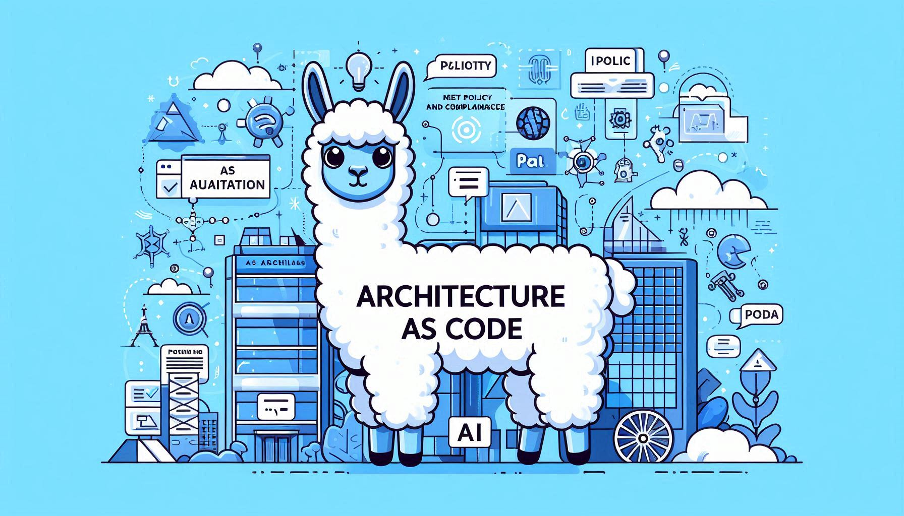

- Architecture as Code: Part 2 - Building the Foundation
- The Architecture Emergency Room
- Core Principle 1: Explicit Architectural Decisions
- Core Principle 2: Version Control and Collaboration
- Core Principle 3: Automated Validation and Testing
- Core Principle 4: Living Documentation
- The Benefits: Why It Matters
- Real-World Impact: The Numbers Don’t Lie
- The Foundation is Laid

Architecture as Code: Part 2 - Building the Foundation
This is Part 2 of our 7-part series exploring Architecture as Code. Read Part 1 to understand how AaC emerged from the limitations of traditional architecture.
The Architecture Emergency Room
Picture this: It’s 2 AM, and your production system is down. As you dig through the code, you realize the root cause is a simple architectural violation—a service calling another service directly instead of through the API gateway you designed six months ago.
The problem? No one enforced that architectural rule. It was documented in a PDF that no one reads anymore. The violation slipped through code reviews because reviewers were focused on functionality, not architecture.
This nightmare scenario is all too common, but Architecture as Code provides the foundation to prevent it. In this post, we’ll explore the core principles that make AaC work and the concrete benefits it delivers.
Core Principle 1: Explicit Architectural Decisions
The first principle of Architecture as Code is making architectural decisions explicit and machine-readable. Instead of hiding decisions in documents or tribal knowledge, you capture them as code.
From Implicit to Explicit
Before AaC:
// Some service somewhere
const userService = new UserService();
const order = userService.getUserOrders(userId); // Direct coupling - architectural violation?With AaC:
# architecture.yml
services:
order-service:
dependencies:
- user-service
communication:
- through: api-gateway
- pattern: mediatorNow the architectural constraint is explicit and enforceable.
Decision Types in AaC
Architecture as Code captures different types of decisions:
- Structural Decisions: How components are organized and connected
- Behavioral Decisions: How components interact and communicate
- Quality Decisions: Performance, security, and scalability requirements
- Technology Decisions: Which frameworks, databases, and tools to use
- Governance Decisions: Standards, patterns, and compliance rules
Core Principle 2: Version Control and Collaboration
By representing architecture as code, teams can leverage the full power of version control systems. This transforms architecture from a solitary activity into a collaborative, trackable process.
Architecture as a Team Sport
Version control enables:
- Traceability: Every architectural change is tracked with commit messages and blame information
- Reviewability: Pull requests for architectural changes allow team input and approval
- Revertibility: Bad architectural decisions can be rolled back like any code change
- Branching: Teams can experiment with architectural alternatives safely
Collaborative Architecture Design
# Architecture changes become collaborative
git checkout -b feature/new-microservice-architecture
# Make changes to architecture files
git add architecture/
git commit -m "Add event-driven architecture for user notifications"
git push origin feature/new-microservice-architecture
# Create pull request for team reviewCore Principle 3: Automated Validation and Testing
Architecture as Code enables automated validation of architectural compliance. This shifts architectural governance from manual reviews to automated checks.
Architectural Test Suites
Just as you write unit tests for code, you can write tests for architecture:
// Example architectural test
describe('Microservices Architecture', () => {
it('should not allow direct service-to-service communication', () => {
const violations = validateArchitecture(architectureModel);
expect(violations.directCommunication).toBeEmpty();
});
it('should require circuit breakers for external dependencies', () => {
const services = getServicesWithExternalDeps(architectureModel);
services.forEach(service => {
expect(service.hasCircuitBreaker).toBe(true);
});
});
});Continuous Architectural Validation
Automated validation runs as part of your CI/CD pipeline:
- Pre-commit hooks: Check architecture on every commit
- Pull request validation: Automated checks before merging
- Deployment gates: Architecture compliance before production deployment
- Runtime monitoring: Continuous validation in production
Core Principle 4: Living Documentation
Unlike traditional documentation that becomes stale, architecture as code generates living documentation that stays synchronized with the actual system.
Auto-Generated Documentation
From your architecture code, you can generate:
- Interactive diagrams that reflect current system state
- API documentation based on defined service interfaces
- Dependency graphs showing service relationships
- Compliance reports for regulatory requirements
- Architecture decision records (ADRs) linked to code changes
Always Up-to-Date
Since documentation is generated from code:
- It automatically reflects the current architecture
- Changes are tracked in version control
- Multiple formats can be generated (HTML, PDF, diagrams)
- It’s always accurate (no manual maintenance required)
The Benefits: Why It Matters
Architecture as Code delivers compelling advantages that extend across the software development lifecycle.
Improved Consistency and Quality
By defining architectural patterns as reusable code templates, teams ensure consistent application of design principles:
- Standardized Patterns: All microservices follow the same structure
- Quality Gates: Automated checks prevent architectural anti-patterns
- Reduced Technical Debt: Violations are caught early
- Faster Onboarding: New team members understand patterns immediately
Enhanced Collaboration and Communication
AaC facilitates better communication between architects, developers, and stakeholders:
- Shared Understanding: Code provides unambiguous specifications
- Collaborative Design: Architecture evolves through code reviews
- Stakeholder Involvement: Non-technical stakeholders can review architectural changes
- Reduced Misunderstandings: Code is more precise than natural language
Accelerated Development and Deployment
Automated architectural validation and code generation accelerate development cycles:
- Rapid Scaffolding: New components follow established patterns
- Automated Validation: No manual architectural reviews
- Faster Feedback: Immediate validation results
- Reduced Boilerplate: Templates generate consistent code
Scalability and Maintainability
As systems grow, maintaining architectural consistency becomes increasingly challenging:
- Enterprise Scale: Governance across multiple teams and projects
- Evolution Support: Architecture adapts while maintaining integrity
- Automated Governance: Standards enforced without micromanagement
- Long-term Maintenance: Architectural decisions remain current and enforceable
Real-World Impact: The Numbers Don’t Lie
Organizations adopting AaC report significant improvements:
- 85% reduction in architectural violations reaching production
- 40% faster time-to-market for new features
- 60% improvement in architectural consistency across teams
- 50% reduction in technical debt accumulation
- 30% increase in team productivity
The Foundation is Laid
These core principles—explicit decisions, version control, automated validation, and living documentation—form the foundation of Architecture as Code. They transform architecture from an abstract concept into a practical, enforceable discipline.
In Part 3, we’ll explore how these principles enable deep automation throughout the software development lifecycle, from continuous validation to automated refactoring.
Have you implemented any of these AaC principles in your organization? What challenges did you face?
Next in Series: Part 3 - The Automation Engine: How AaC Transforms Development
Previous in Series: Part 1 - The Revolution Begins